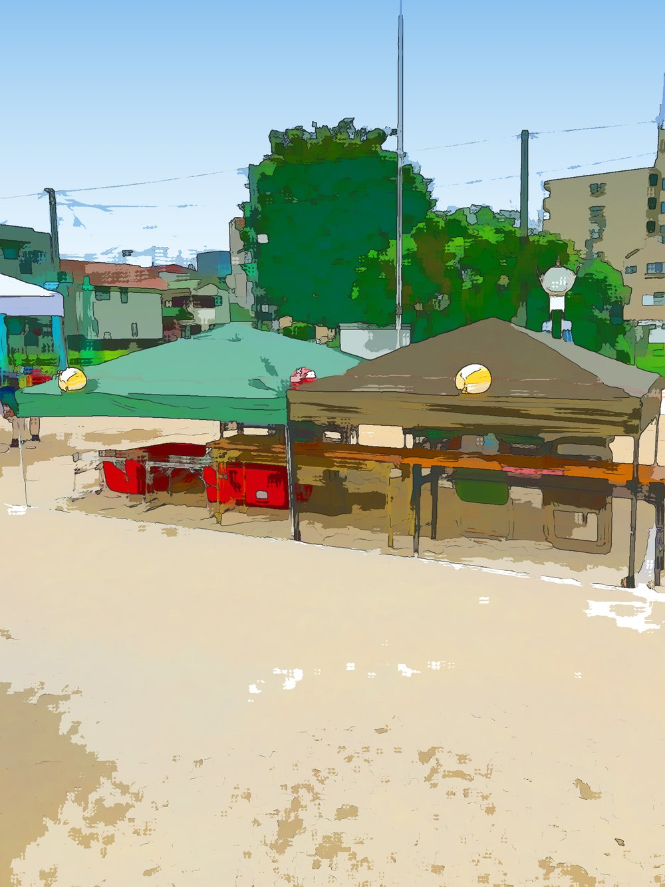

8月1日・2日の盆踊り大会。その出店に向けて、今日は朝6時半から準備でした。

テントを立てて、机を運んで。夏の朝は早い時間でももう暑いです。それでも、こうして形になっていくのを見ると、じわじわ実感がわいてきます。
調べてみると、昔は町会でも出店をしていたそうです。
それがだんだん、人が集まらなくなって、「やろう」と言い出す人もいなくなって。気がついたらやらないのが当たり前になっていました。誰が悪いわけでもなく、そうやって少しずつ消えていくもんなんやと思います。
町会長1年目の私は、その「当たり前」をよく知らなかった。だから逆に「やってみませんか」と声をかけられたのかもしれません。
とはいえ、いざやろうとすると人手が足りません。うちの町会だけでは、どうにも回らない。
そこで隣の町会にも声をかけて、一緒にやってもらうことにしました。おかげでなんとか形になりそうです。
おにぎりとドリンクの屋台に、会議で決まった子ども向けの「ゼリーのつかみ取り」。ドリンクを冷やす氷も、オープンチャットでお願いしています。
ここまで来られたのは、会議に集まってくれた方、仕入れに行ってくれた方、そして今日一緒に汗をかいてくれた皆さんのおかげです。
当日の様子も、うまくいってもいかなくても、正直に書きます。